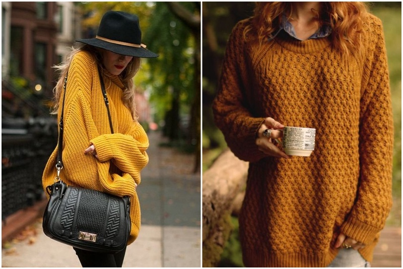

8 Knitted Outfits To Keep You Cosy This Fall
Fall is the time to be cosy, but that doesn’t mean you have to sacrifice looking cute. It’s the season we love for the beautiful foliage outside, the urge to cosy up on the sofa with a nice blanket, a good movie, and lots and lots of warm cups of tea. It’s also the season we love for soft fluffy jumpers, warm scarves, cute boots and stylish coats. So if you’re looking for some cute outfit ideas for the fall we’re here to provide you with a dose of inspiration.
1. We have to start with oversized sweaters. You can’t talk about cosy outfits and not start with oversized chunky sweaters. They go great with skinny jeans and even better with high waisted jeans. To us, they’re the epitome of autumn. There’s nothing cosier than an oversized sweater.
2. And if you can get those oversized sweaters in warm autumn colors – that’s even better. Yellow and mustard are our favorites. They go well with the autumn colors and make you feel warmer, don’t they?
3. Burgundy and other deep shades are a fall classics. You have to have at least one burgundy jumper in your wardrobe for fall. It’s a must for everyone. They’re both chill and stylish at the same time and will go great with dark red lipsticks that are always popular this time of year.
4. Cropped sweaters also go incredibly well with mini skirts. It’s a winning combination for any girl who wants to look cosy yet cute. Pair this with some black tights, and booties and you’re gonna feel and look amazing.
5. Whoever came up with laceup sweaters is a genius. It’s like combining the sexy vibes of a corset with the cosiness and comfort of a sweater. Absolutely genius, and a must have for any girl who wants to look low key sexy this fall.
6. Leather jackets the best thing about fall, am I right? I mean, you can’t go wrong with a leather jacket in the fall, no matter what you pair it with. But we think they go especially well with knitted jumpers. There’s just something about combining those textures that works really well.
7. Long chunky cardigans are a great choice if you’re not quite ready to wear a coat yet. They’re comfy as heck and you can wear them with literally anything. Put on an old T-shirt and some jeans, throw a long chunky cardigan on top – you look great. Wear a lovely dress or a lacy top and put the cardigan on top – suddenly you’re a style guru.

8. Not a lot of people would think of pairing overalls with a knitted sweater but we think it’s a winning combination. It just works, you know. Throw on a cute hat and some boots or converse shoes and you’ve got yourself the cosiest outfit ever.